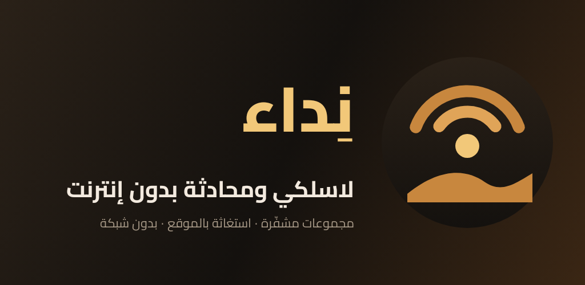

ووكي توكي، محادثة تنتقل من جوال لجوال، مجموعات خاصة مشفّرة، وزر استغاثة بالموقع — بدون إنترنت وبدون خدمات Google.
Offline walkie-talkie, mesh chat, encrypted groups and SOS — no internet, no Google services needed.
تحميل التطبيق (APK)© 2026 وطن النهار — جميع الحقوق محفوظة · All rights reserved